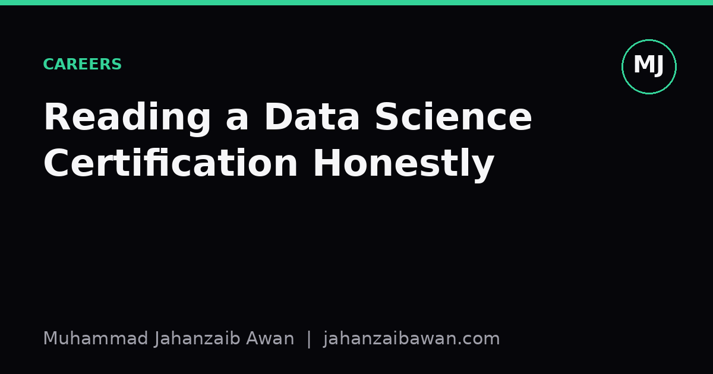

Reading a Data Science Certification Honestly
A certificate is a compressed claim about your skills. Learning to read it the way a hiring manager or a rigorous peer would is a useful, humbling exercise.

Why the label on the tin matters less than the contents
I have completed enough online courses to know the feeling of finishing one: a small dopamine hit, a certificate PDF, and a vague sense that I now know something I did not know before. The honest question, though, is what exactly that certificate is claiming on my behalf. Does it say I can design a leakage-free train test split, or does it say I watched someone else do it while I nodded along? Those are very different claims, and a lot of the value of a certification depends entirely on which one it is.
The reason this matters is that a certificate is a form of compression. Months of lectures, quizzes, and exercises get reduced to a single line on a CV or a badge on a profile. Compression always loses information, and the interesting question is what gets thrown away. If the assessment behind the certificate was rigorous, the compressed line still carries real signal: it tells a reader that a specific, verifiable bar was cleared. If the assessment was lenient, permissive multiple choice with no penalty for guessing, or a project graded by a script that only checks whether a file exists, the line carries almost nothing, no matter how impressive the course title sounds.
I think the discipline of reading a certification honestly is the same discipline I try to apply to a model's reported accuracy: ask what the evaluation protocol actually was before trusting the headline number. A course is, in effect, a model of a learner's competence, and the certificate is its test score. If I would not trust a 98 percent accuracy claim without knowing the test set, I should not trust a certificate without knowing what its final assessment actually required.
A worked example: two certificates that look identical on paper
Imagine two data science certificates with near-identical syllabi: regression, classification, clustering, a bit of neural networks, and a capstone project. On paper they are indistinguishable. Now look at how each one checks understanding.
Certificate A gives a multiple-choice quiz after each module, allows unlimited retakes, and requires 70 percent to pass. The capstone project is graded by uploading a notebook that is checked only for the presence of certain function calls: does the word train_test_split appear, does a metric get printed. There is no check for whether the split respects time ordering, whether the metric chosen suits the problem, or whether the model beats a trivial baseline. A learner could pass this certificate by copying a tutorial notebook, changing the dataset path, and running it once. The pass rate under this scheme could plausibly sit above 90 percent, and that number alone should be a warning sign.
Certificate B requires a written justification of the evaluation choices: why this split, why this metric, what the baseline comparison was, and what would make the result untrustworthy. It is graded by a human, or by a rubric that specifically penalises leakage, missing baselines, and cherry-picked metrics. Suppose the pass rate here is closer to 55 percent, with resubmissions required for common mistakes like fitting a scaler on the full dataset before splitting. That lower pass rate is not a weakness of the certificate, it is the signal. A credential that is hard to fail is, almost by definition, easy to pad.
If I were hiring or simply deciding where to spend my own study time, I would weight Certificate B far more heavily even though the syllabus looks the same on the surface. The difference lives entirely in the assessment design, which is usually the part nobody advertises on the landing page.
Questions that separate signal from padding
Since the marketing copy rarely tells you how rigorous the assessment is, I have found it useful to interrogate a certification with a short checklist, the same way I would interrogate a paper's experimental section.
- Is there a real held-out test? A quiz you can retake indefinitely with the same questions is not a test, it is a memory exercise with extra steps.
- Does the capstone require a baseline comparison? A project that reports a metric with no comparison to a simple baseline, such as predicting the majority class or the historical mean, teaches you nothing about whether the model is actually useful.
- Is there any check for data leakage? If preprocessing steps like scaling, imputation, or feature selection are allowed to see the test set before the split, the whole exercise is training people to produce inflated numbers.
- Who grades the open-ended work? Automated checks for keyword presence are cheap to build and easy to game. Human review, or a detailed rubric with specific failure modes, is far harder to pass by imitation alone.
- What is the pass rate, if published? A near-universal pass rate on a certification that claims to test a genuine skill is itself informative, and not in a flattering way.
None of these questions require insider knowledge. Most can be answered by reading the syllabus closely, checking sample assessments if they are public, or simply asking someone who has completed the course what the final project actually demanded of them.
The practical takeaway
A certificate is not worthless just because it is easy, and it is not automatically valuable just because it is hard. What matters is whether the difficulty comes from testing the right thing. A brutally hard exam on trivia is still padding; a modest but well-designed project that forces a learner to justify an evaluation choice is signal, even if the course itself only takes a weekend.
My own rule of thumb now is to treat a certificate the way I would treat a benchmark result: I want to see the protocol, not just the score. If a course cannot show me how it distinguishes a learner who understands leakage from one who does not, I assume it cannot, and I look instead at what that person can actually produce, a small reproducible project with a clear evaluation write-up, over what they can display. That is slower to assess, but it is far harder to fake, and in the end that is the only kind of signal worth trusting.